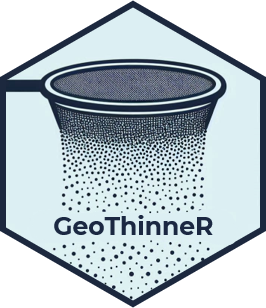

Package index
-
thin_points() - Spatial Thinning of Points
-
brute_force_thinning() - Perform Brute Force Thinning
-
kd_tree_thinning() - Perform K-D Tree ANN Thinning
-
rounding_hashing_thinning() - Rounding Hashing Thinning
-
grid_thinning() - Perform Grid-Based Thinning of Spatial Points
-
precision_thinning() - Precision Thinning of Spatial Points
-
max_thinning_algorithm() - Thinning Algorithm for Spatial Data
-
long_lat_to_cartesian() - Convert Geographic Coordinates to Cartesian Coordinates
-
assign_coords_to_grid() - Assign Geographic Coordinates to Grid Cells
-
caretta - Loggerhead Sea Turtle (Caretta caretta) Occurrences in the Mediterranean Sea